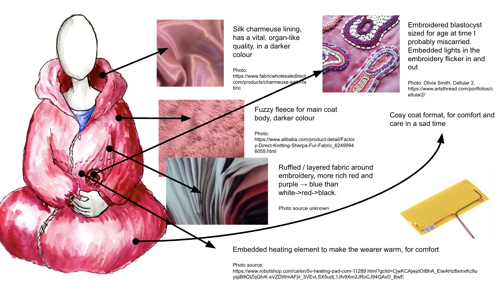
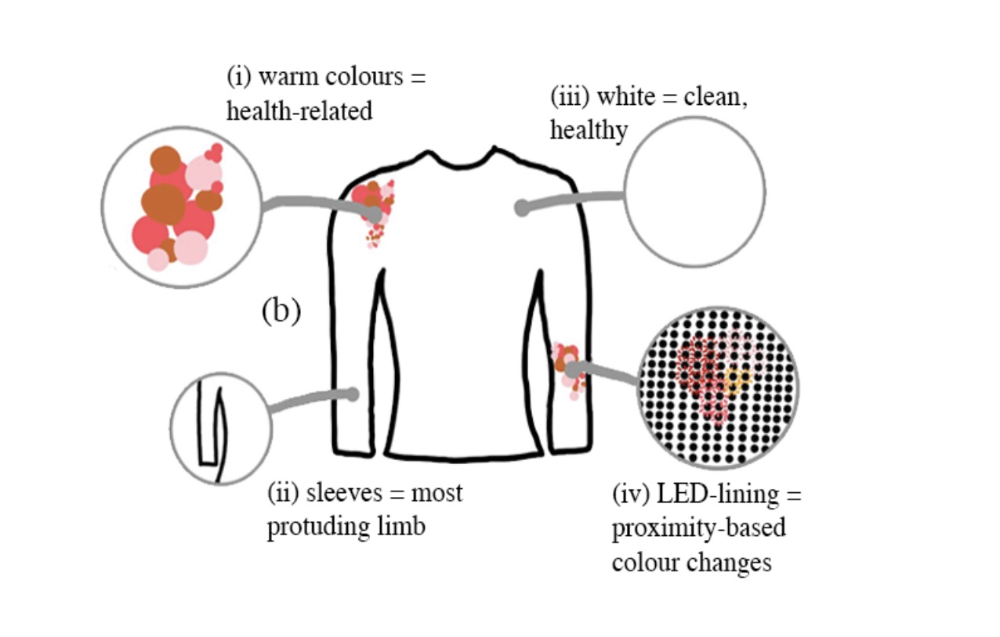
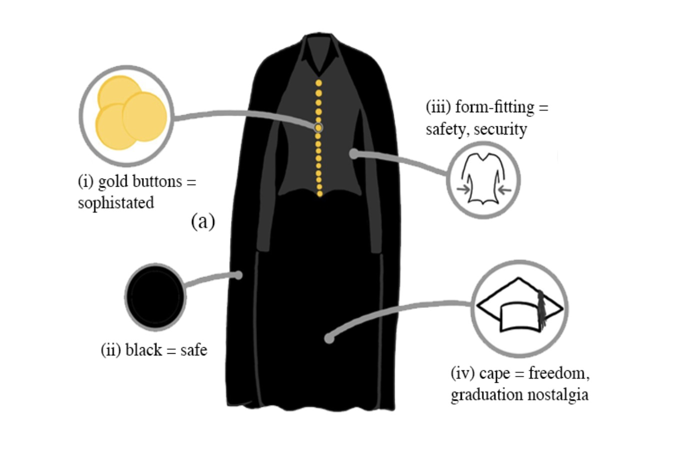
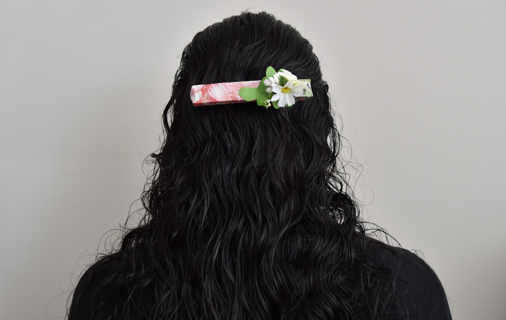
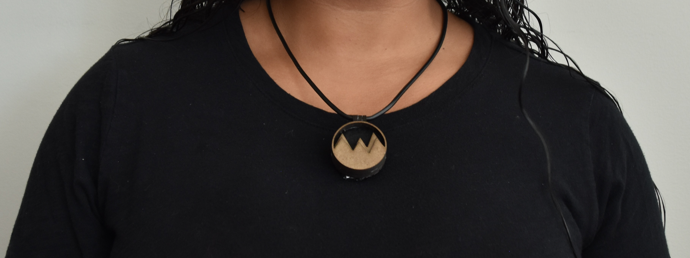
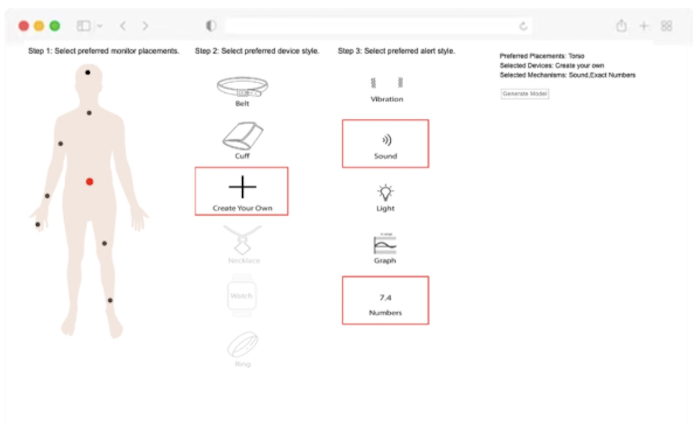
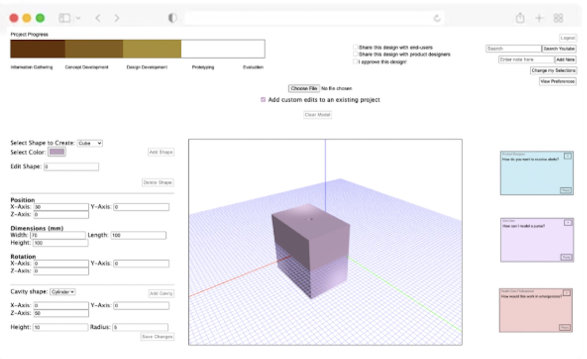
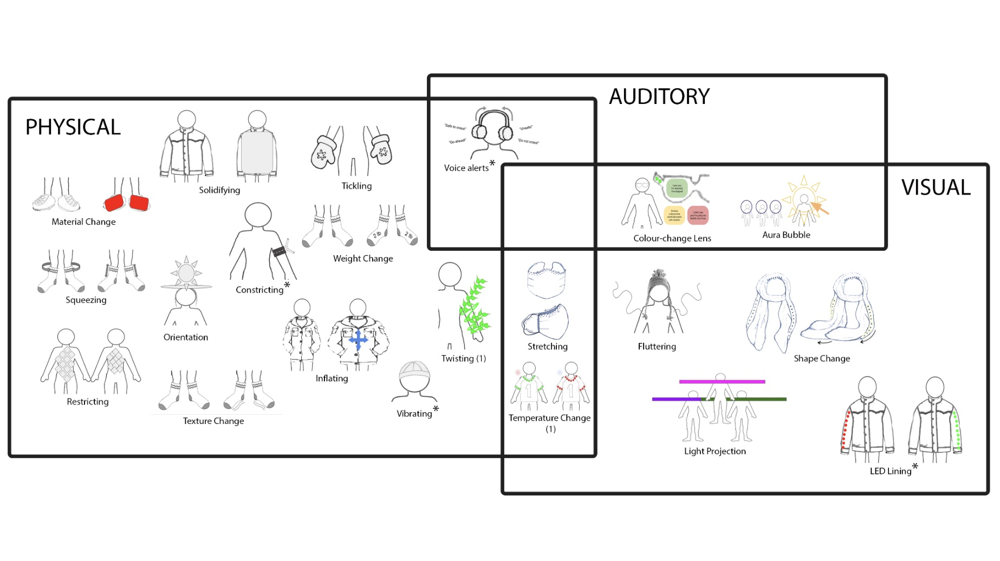
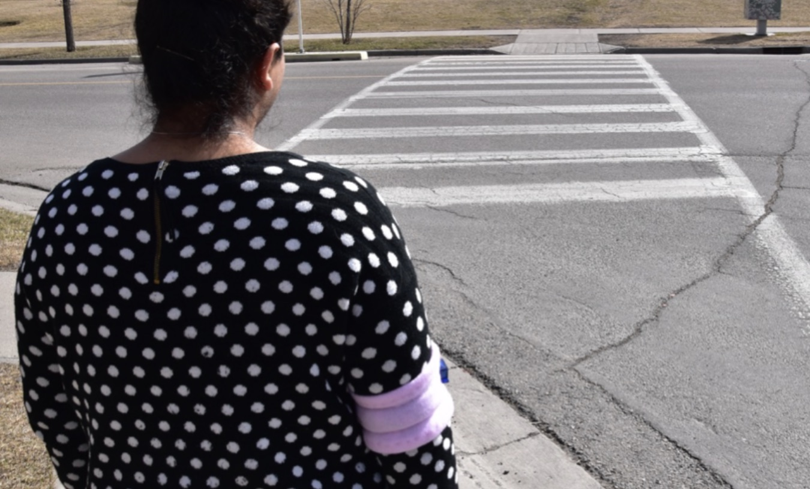

Designing technology for more positive human experiences.
I’m a senior PhD candidate in Computer Science at the University of Victoria. My research asks how can we design interactive technologies that cultivate more positive human experiences—with ourselves, with others, and with the world around us. My doctoral work investigates this question through the custom design of wearable technologies and the social experiences they make possible.
Positive social experiencesInteractive technologiesSelf-expressionWellbeing
· About ·
Interactive technologies, human experiences, & social and emotional wellbeing.
As a senior PhD candidate in Computer Science at the University of Victoria working in human–computer interaction, I investigate how custom wearable technologies can create positive social experiences by supporting self-expression, accounting for social contexts, and mediating interactions.
Looking ahead, I aim to extend this work beyond wearables to study how interactive technologies can cultivate more positive human experiences broadly. My future research will explore emotional and social awareness, positive social experiences, and material and embodied interaction.
From a young age, I've had an interest in connecting the possibilities of computing with the creativity of making and the nuances of everyday social life. HCI provides a lens through which these worlds collide, opening up doors to consider how technologies can be designed in more whimsical and playful manners to promote feelings of happiness and joy, while remainingful meaningful to their users.
· Current research ·
Creating positive social experiences through the design of custom wearables.
My current research investigates how the design of custom wearable technologies can support positive social experiences. Across this work, I explore how wearables can help people express themselves, fit into the social contexts of everyday life, and mediate interactions with others.
01 /
Self-expression through customization
How do people alter the form and function of wearable technologies to reflect their identities, preferences, and needs? This work treats wearables as expressive artifacts—not simply functional devices—and explores how customization can support agency and personal meaning.
02 /
Social acceptability in context
How do audiences, environments, social norms, and device goals shape people's experiences using and viewing wearable technology? This work examines why acceptability depends on the relationship between a device and the context in which it is worn, emphasizing how devices are perceived.
03 /
Mediating social interactions
How can wearable technologies shape what people communicate and do together? This work explores wearables as mediators of interaction that can make intentions more legible and support more positive encounters.
These themes are complementary lenses towards answering my overarching research question: how does the design of a device's form, function, or perception influence the resulting social experiences they create?
· Selected projects ·
Research through design and making -- personalized and expressive technologies.
These projects highlight the foundational concepts that make up my current research. The first four are most directly connected to my doctoral thesis, while the latter projects demonstrate related interests in creativity and wellbeing more broadly.
Custom wearables & positive social experiences.

Expressive Clothing · An example of how participants mapped different encodings onto their final designs.

Expressive Clothing · An example of a conversation-starter expressive garment.

Expressive Clothing · An example of an allusive expresive garment.
1 / 3
Self-expression · MakingCHI 2024
Expressive Clothing
Information communication through clothing
Self-expression is a common driver behind the customization of physical artifacts. This project considered the custom design of clothing, a practice commonly undertaken by hobbyist-sewers to gain control over the design of their garments. Through a diary study, we identified five multi-facted approaches participants undertook for self-expression and four challenges they faced during their design processes. We further ideated upon how technological tools can help hobbyists overcome these challenges.
Research contribution
5 approachesIdentified five multifacted communication approaches.
4 challengesUncovered four barriers to encoding information in clothing.
4 design opportunitiesDiscussed four opportunities for supporting self-expression in design.
GlucoMaker · An audio alerting and exact numerical reading purse prototype.

GlucoMaker · A vibrating hairclip prototype.

GlucoMaker · A vibrating pendant prototype.

GlucoMaker · The designed and developed co-design system - Customization Guidance Interface.

GlucoMaker · The designed and developed co-design system - Device Designer Interface, Collaborative Discussion Interface, Learning Portal, Project Progress.
1 / 3
Health · Customization · Co-designCHI 2024
Collaborative Assistive Technology Design
Personalizing glucose monitors with GlucoMaker
Glucose monitors are used by millions of individuals to manage type 1 diabetes, however, their design often does not meet user needs. Through a three-phase co-design study consisting of prototyping, interviews, and focus groups, I investigated which glucose-monitor form factors and functionalities people with type 1 diabetes prioritize, and when collaboration between people with diabetes, healthcare professionals, and designers is beneficial. The findings informed the design and implementation of GlucoMaker, using which three customized monitors were designed and fabricated. GlucoMaker was later evaluated in a real-world asynchronous co-design setting to uncover how such collaborative tools support articulation work, boundary work, and translation work, and how they might support them even more.
Research contribution
Co-designCoordinated remote co-design across interviews, focus groups, and design sessions.
3 prototypesDesigned and fabricated three functioning, non-traditional wearable monitors.
System designIteratively designed and developed an interactive, scaffolded design tool.
Wearing Awareness · A stretching facemask prototype.

Wearing Awareness · A collection of the unique feedback mechanism designs our participants sketched.

Wearing Awareness · A constricting armband prototype.
1 / 3
Mobility · Social fit · IoTCHI EA 2023
Wearing Awareness
Designing wearables for autonomous vehicle-pedestrian interactions
As part of my undergraduate honours thesis, I conducted a design study to ideate subtle and out-of-the-box ideas for pedestrian-worn devices that could be used to communicate autonous vehicle intent and awareness to pedestrians. We gathered 21 unique ideas, and prototyped three sample pedestrian-wearables to convey the concept.
Socially Acceptable Wellbeing Wearables · A snippet of the early framework we derived from our comparison..
Well-being · Wearables · Social AcceptabilityONGOING
Socially acceptable well-being wearables
Understanding relationships between design considerations informing social acceptance
Connecting insights from my three previous projects, this exploratory work compared commercial well-being wearables with participant-proposed designs to explore how broader societal considerations such as context, device goals, and audiences inform how device characteristics are designed. We demonstrate that social acceptability is better understood as a spectrum shaped by relationships among multiple attributes rather than as a linear checklist.
Related work in creativity, learning & communication.
Creativity · HappinessCHI 2026
Understanding How Creativity Support Tools Foster Happiness
Designing for positive creative experiences
Led by my supervisor, Dr. Sowmya Somanath, this work examines how people perceive their chosen creativity support tools as influencing happiness, and how such tools might be redesigned to cultivate happiness through creative activities. It presents design implications for reimagining creativity support.
Towards a framework for understanding how gratitude apps can support affective scaffolding
Co-led by an undergraduate research assistant, this work considers how digital applications designing to support gratitude reflection elicit positive experiences and influence individuals' affective processes. Through a user study with a probe application, Gratitude Buddy, we developed a descriptive framework that extends the Theory of Affective Scaffolding's eight dimensions into 18 interface-level sub-dimensions that can guide the future design of affective scaffolding technologies.
· Selected Publications ·
Research outputs.
Selected peer-reviewed papers. To see a full list of workshop engagements and early-work that led to these publications, please see my CV. For more project context, please reach out!
2026
Understanding How Creativity Support Tools Can Foster Happiness
S. Somanath, M. Stewart, S. Lakhdhir, P. Berger, and R. L. Mandryk · CHI 2026